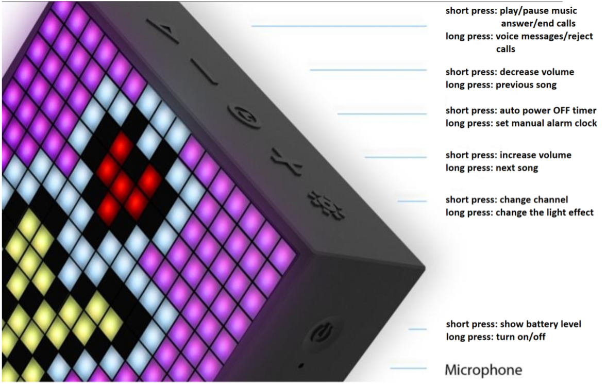
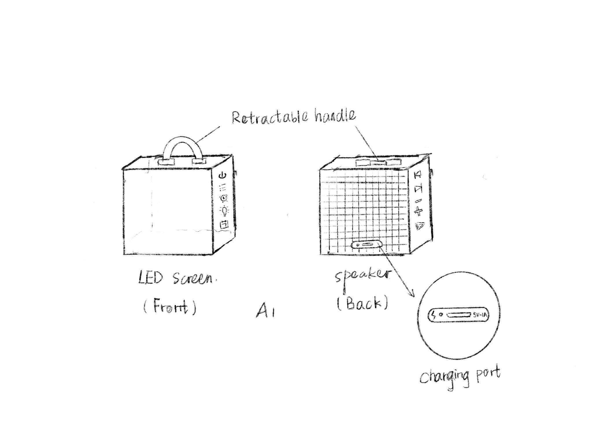
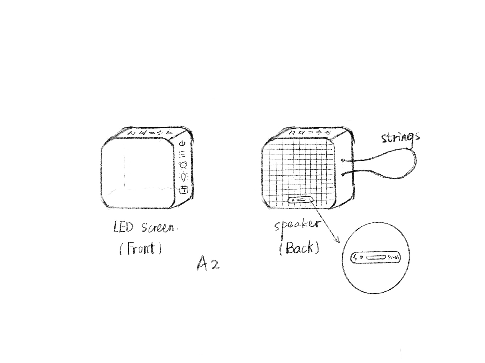
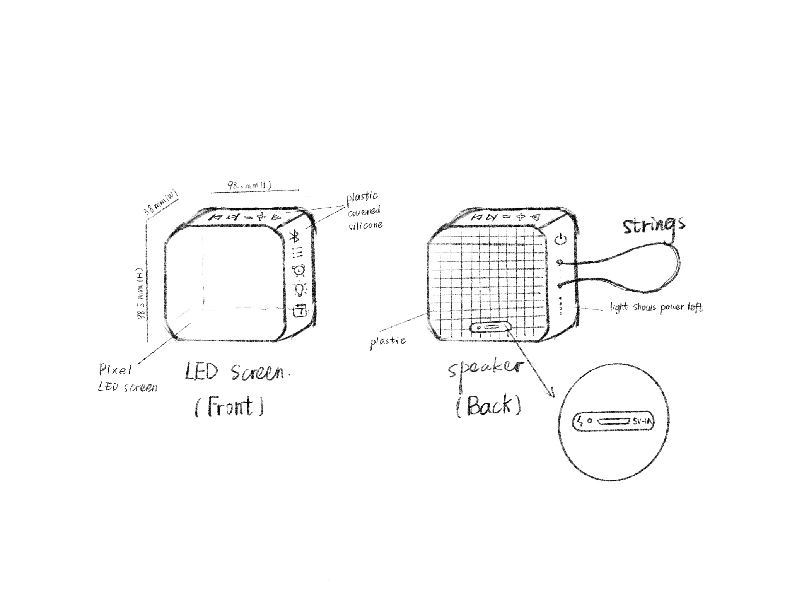
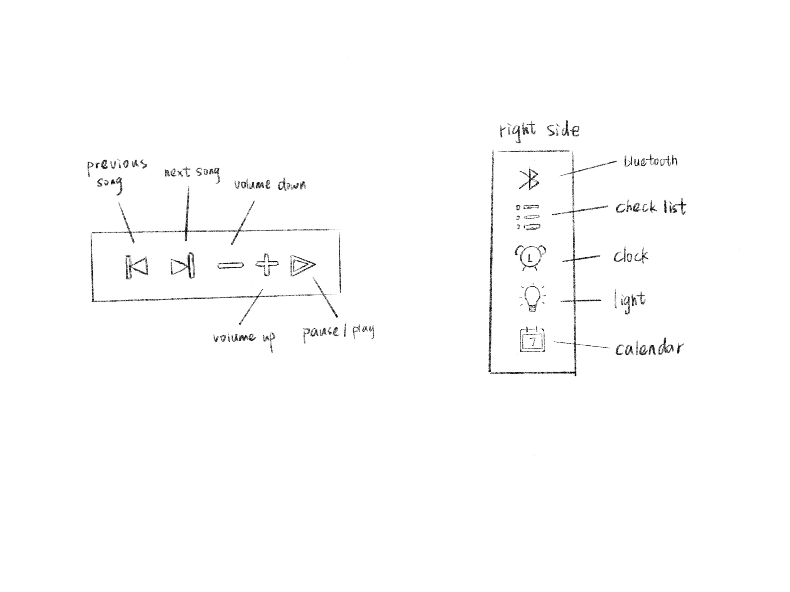

Projects
Bluetooth Speaker Re-design
Introduction
The product we’re going to evaluate is a Bluetooth speaker called “Timebox-Evo” designed by Divoom. This multi-function and portable Bluetooth speaker is about the size of the palm. It is designed to meet the needs of today’s busy young people. This Bluetooth speaker is described as an “evolutionary design” because it can fulfill 12 different needs through its application. Its functions include music play, pixel art, online gallery, weather, smart alarm, sleep aid, notification, LED Editor, messenger, pixel Chat, Tools & Games, and Cloud Software(Divoom, n.d.). This Bluetooth speaker is a black cube with a pixel LED screen covering its front, a loudspeaker in the back, and silicone covering the edging. The pixel LED screen in the front can display pixel images according to customers’ needs. Apart from that, information such as time and messages can be displayed on the screen. Five protruding buttons on top of the speaker serve the following functions: play or pause music, answer or end incoming calls, adjust the volume, change sounds, turn off the timer, etc. Each button controls two functions, and people can achieve these functions by pressing or holding the corresponding button. The button on the right side of this speaker is the power button, and it also has two functions that can be triggered by pressing or holding. I think this design is a failure due to its confusing button design and redundant functionality.
Problem Space
The problem we want to address is the absence of an easy-to-use, personalized portable Bluetooth sound speaker for students on the market. Since most Bluetooth sound speakers on the market are concise and straightforward style, it is difficult to fulfill most young people’s needs for expressing individuality and distinct characteristics of oneself. Our current generation has complicated functions, and we expect the next generation to have more concise and refined functions to meet the basic needs of most students in their daily life. This problem exists because there’s seldom a Bluetooth speaker designed just for students, and similar products on the market don’t have enough functions. Among the young, people can see the many efforts young people make to display their characteristics, such as getting tattoos and putting stickers on their computers. Our pixel LED screen gives young people a space to show themselves. Other functions of our product, such as alarm clock, weather display, and timing, can also be a big helper for students. We also support the import of class schedules and homework due dates in the scheduling feature. Besides, we have the function of a timer, and this function can be fully utilized in the study. Therefore, our redesign for the next generation of this product will be a perfect product for students to use.
Design Alternatives
Our primary purpose is to eliminate the features that are not commonly used and improve some of the exterior design. The main problem we want to solve is the vague design of the buttons, each of the buttons controls two functions, and these two functions are triggered by long press and short press. It might be difficult for users to give instructions accurately. Besides, as a portable Bluetooth speaker, we want to add some details to improve the user's usage experience.
For the first alternative design (A1), we used the shape of a cuboid, which was the same as its original design. On top of the Bluetooth speaker, we added a retractable handle to increase its portability. When users need to carry the product somewhere, they can use the handle; and when they don’t need them, they can retract them. Although we changed the retractable handle to strings in our final product, this proposal was meaningful progress of our design and made our product more portable. On the right side of the speaker were a power button and buttons related to efficiencies, such as checklist, clock, and calendar. On the left side were buttons related to music, such as volumes, pauses, and starts. Those buttons had only little differences from our final product. We also changed the design of the button icons, in the original version, some of the buttons on top of the speaker have unintuitive icons, so we’ve improved the icon design.
For the second alternative design (A2), we rounded the speaker’s corners and made them more curved. That was our most significant change from the original product to our new product. We aimed to make our product more slippy and avoid any possibility of hurting our users. We moved buttons related to music to the top of the product and created two holes on the left side of the product where users can tie strings between them. The design of string was kept in our final product. Users can customize the string to fit their needs.
Physical design
Our product will be 98.5 mm in length, 38 mm in width, and 98.5 mm in height. It will look like a rounded cuboid. We will use plastic and soft material such as silicone to make our Bluetooth speaker. The screen, which is the front part, will be made of 16 x 16 LED; the speaker, which is the back part, will be made of plastic. Those parts will be made of plastic covered with silicone. This product will be around 315 grams so that users can easily carry it to schools. On top of the product are buttons related to music, such as play and pause, volume change, previous and next song. On the right side of the product are buttons related to efficiencies, such as Bluetooth, checklist, clock and alarm, light change, and calendar. On the left side are a power button and four small lights that show the percentage of how much electricity remained. Each light represents 25% of electricity. In other words, when you have 50% percent of power, two lights will glow green. For those buttons presented on our product, we use the principle of resemblance, reference, and arbitrary icons, which will significantly increase learnability and memorability. People who use our product don’t need to learn new icons since all our buttons are easy to recognize and use. For instance, the calendar button on our product looks exactly like a real calendar.
Interaction
We designed this product aiming to help students be more efficient. As shown in the picture above, there are ten buttons (without the power button) on the Bluetooth. Similar to other Bluetooth, we have buttons that can adjust music such as changing to the previous song and next song, increasing and decreasing the volume, and pausing and playing. Users can click those buttons to make them work.
The buttons on the right side are the most significant change we made based on the original product. The second button is called the “checklist”. By downloading our application on their phone, users can add their checklist or To-do list and check them whenever they want by clicking on the “checklist” button. When in the “checklist” mode, double-clicking on the “checklist” button means you have finished this goal, and it will be a “√” in front of it.
The third button is “clock and alarm”. Like the original product, one clicking means showing the time and holding means countdown. This function helps users to set their short-term time goals. For example, when they want to study for one hour, they can set a time countdown to one hour. Besides, we fix the problem of the original product that users have to turn off the alarm on their phones. In our new product, users can click the clock button to turn it off.
The fourth button is called “light”. We’ve mentioned above that the pixel LED screen in the front can display pixel images according to customers’ needs. Users can design their images using their phones and display them on the screen. Clicking the light button will show those images. Moreover, holding the button will turn into sleep mode. The Bluetooth will glow soft and warm light when it is in “sleep mode”.
The fifth button is “calendar”. The calendar helps users to check the date and their schedule. Click one time means to show the date, and click twice means show the schedule. Users can set important schedules on their phone, or import calendar feed downloaded from other websites such as Carmen or google calendar.
Our product will automatically show messages and texts sent from others. Users don’t need to worry about missing important information when they study or listen to music. According to Norman’s fundamental argument, a good design should allow users to be able to tell how to use it just by looking at it (Kelly, 2020, slide 8). We apply this principle to all of our designs, which made our product simple to use by students. Additionally, essential functions can be achieved by one click, auxiliary functions can be achieved by holding. As a result of this new design, users will not miss any critical functions.
Conclusion
Our redesign is merited because we narrowed our target audience to students and filled in the gap of a personalized sound speaker designed for students in the market. Most of what we've done is to solve the problem of unclear button icon design, fuzzy mode of sending instructions, and we added some improvements to make our product easier to use. By eliminating unnecessary functions, improving our previous model, our product is now a well-designed personalized sound system for students, which not only has the functions most students need, such as alarm clock, schedule, etc.,but also allows students to show themselves through pixel art.